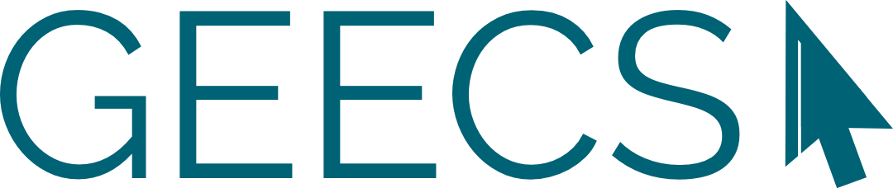

My Extracurriculars

Senior Vice President, Tau Epsilon Kappa Professional Fraternity
Tau Epsilon Kappa is a co-ed professional technical fraternity committed to professional technical development as well as the advancement of social and academic excellence among the fraternity brothers.

GEECS
Girls in Electrical Engineering and Computer Science (GEECS) is a student organization that encourages the professional, academic, and social development of individuals who identify as women in technology.
Michigan Sustainable Strategy
To accelerate students' education and participation in sustainability for their prospective professional careers

Children of Yost
The best fanbase in college hockey!